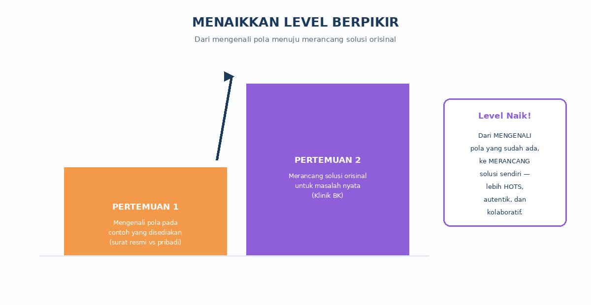
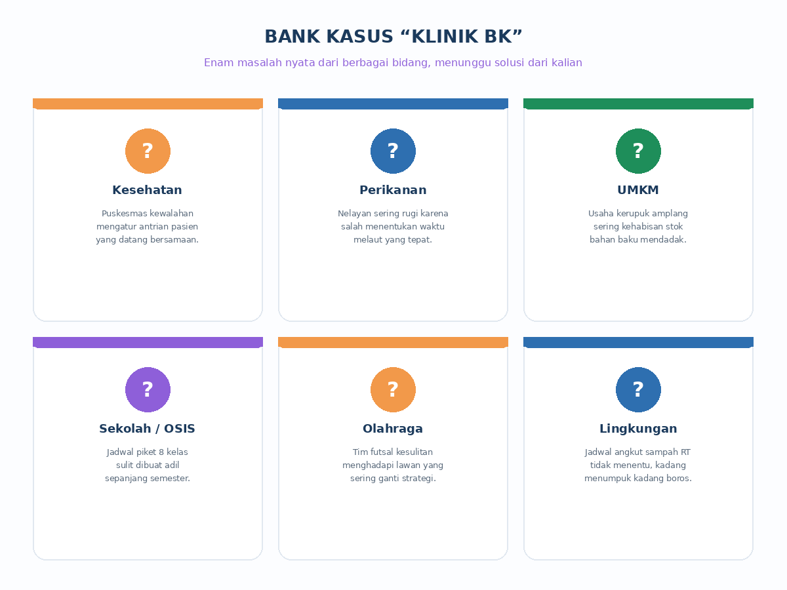
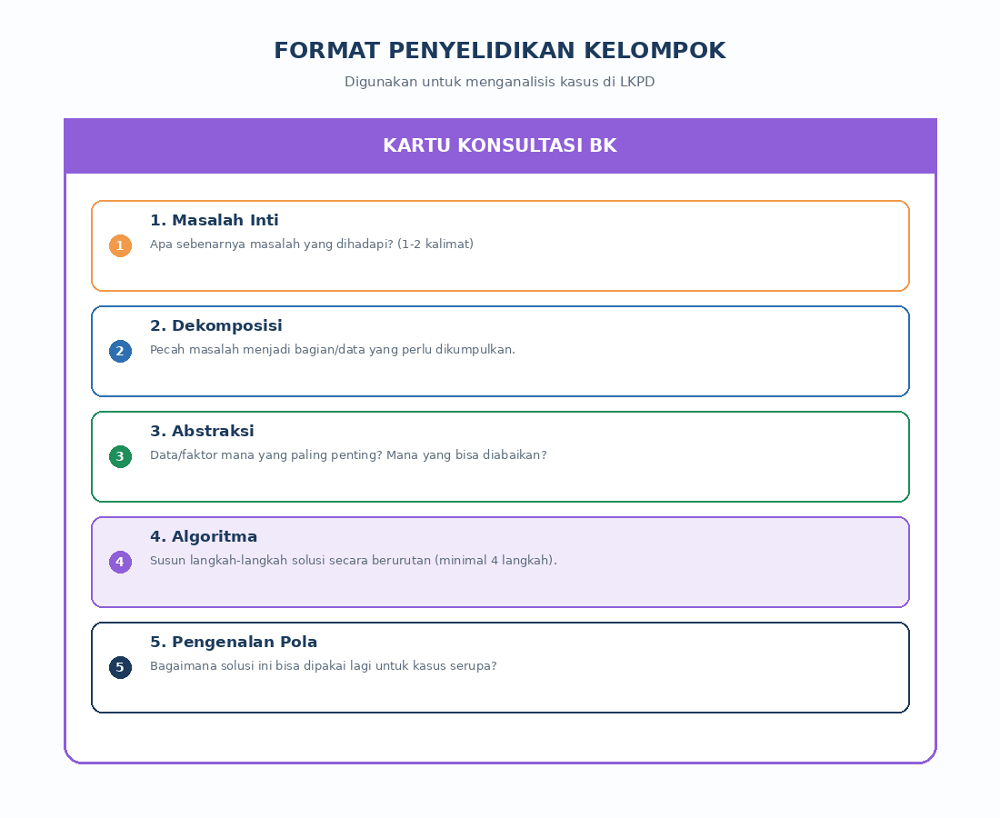
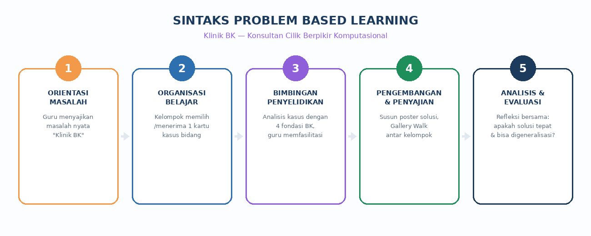
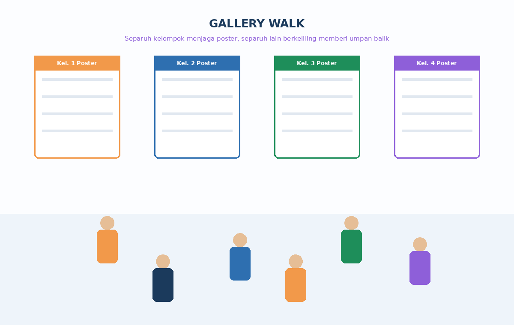
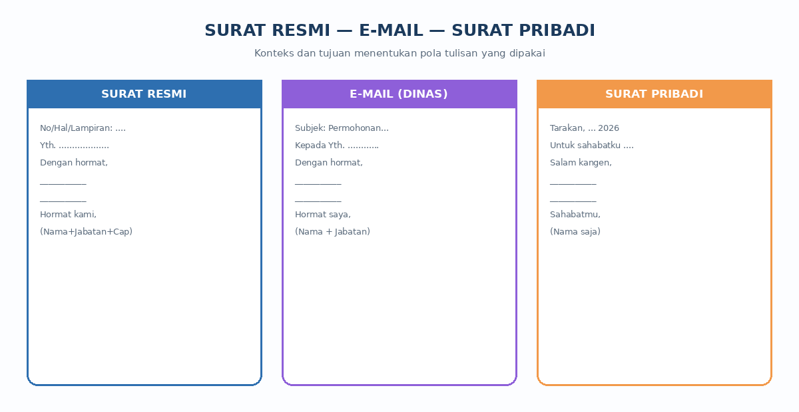

Dari Mengamati Pola, Menuju Merancang Solusi
Halo lagi! Minggu lalu kita udah kenalan sama 4 jurus berpikir komputasional (BK): dekomposisi, abstraksi, algoritma, dan pengenalan pola. Kita juga udah buktikan kalau jurus itu dipakai di mana-mana — dari surat resmi sampai nelayan yang mau melaut.
Nah, sekarang levelnya naik! Kalau kemarin kita cuma MENGAMATI pola yang sudah ada, kali ini kamu akan jadi seorang KONSULTAN yang harus MERANCANG SOLUSI untuk masalah nyata yang belum ada jawabannya.

Klinik BK Cilik
Bayangkan sekolahmu baru saja membuka sebuah "Klinik BK Cilik" — tempat curhat khusus buat siapa pun yang punya masalah rumit di bidang apa pun, dan butuh solusi yang runtut dan masuk akal. Kamu dan teman sekelompokmu adalah tim konsultannya!
Klien-klien yang datang bukan cuma dari dunia sekolah, lho. Ada dari Puskesmas, ada nelayan, ada pedagang kecil, bahkan ada pelatih futsal. Semuanya punya masalah asli yang terjadi di sekitar kita. Tugas kalian: dengarkan masalahnya, lalu bantu selesaikan pakai 4 jurus BK.
Enam Kasus yang Menunggu Solusimu
Ini dia enam masalah nyata dari berbagai bidang yang bisa jadi "pasien" Klinik BK. Kelompokmu nanti akan memilih atau mendapat satu di antaranya untuk dianalisis mendalam.

| Bidang | Masalahnya Apa? |
|---|---|
| Kesehatan | Puskesmas kewalahan mengatur antrean pasien yang datang bersamaan. |
| Perikanan | Nelayan sering rugi karena salah menentukan waktu melaut yang tepat. |
| UMKM | Usaha kerupuk amplang kehabisan stok bahan baku saat permintaan tinggi. |
| Sekolah / OSIS | Jadwal piket 8 kelas sulit dibuat adil sepanjang semester. |
| Olahraga | Tim futsal kesulitan menghadapi lawan yang sering ganti strategi. |
| Lingkungan | Jadwal angkut sampah RT tidak menentu, bak sampah sering meluber. |
Kartu Konsultasi BK
Supaya nggak bingung mulai dari mana, kelompokmu akan memakai "Kartu Konsultasi BK" — semacam formulir yang memandu kalian menyelesaikan masalah selangkah demi selangkah, mengikuti 4 jurus BK plus satu langkah tambahan di awal: merumuskan inti masalah.

Sintaks Belajar Hari Ini: Problem Based Learning
Pertemuan kali ini kita nggak cuma diskusi biasa, tapi mengikuti tahapan Problem Based Learning (PBL) — cara belajar yang dipakai betulan sama mahasiswa kedokteran, calon insinyur, sampai pengusaha, lho! Ini tahapannya:

- Orientasi Masalah — gurumu memaparkan skenario Klinik BK dan bank kasusnya.
- Organisasi Belajar — kelompokmu terbentuk dan memilih/mendapat satu kasus, lalu menerima Kartu Konsultasi BK.
- Bimbingan Penyelidikan — kelompokmu mengisi Kartu Konsultasi BK bersama, gurumu berkeliling membantu.
- Pengembangan & Penyajian Hasil — hasil analisis dipindahkan ke poster, lalu dipresentasikan lewat teknik Gallery Walk.
- Analisis & Evaluasi — kelas membahas bersama: apa benang merah dari semua solusi yang berbeda bidang tadi?
Teknik Gallery Walk: Belajar dari Karya Kelompok Lain
Setelah poster jadi, kita nggak cuma presentasi di depan kelas seperti biasa. Kali ini kita pakai Gallery Walk — separuh anggota kelompok "berjaga" di poster masing-masing untuk menjelaskan ke pengunjung, separuh lagi berkeliling ke poster kelompok lain untuk melihat dan memberi masukan lewat lembar umpan balik. Lalu, posisinya ditukar!

Menutup Pertanyaan Pertemuan Lalu
Di akhir pertemuan sebelumnya, sempat muncul pertanyaan: gimana ya kalau surat itu ditulis lewat e-mail (bukan kertas)? Apakah ikut pola surat resmi atau surat pribadi? Yuk kita lihat perbandingannya:

Ternyata, e-mail dinas itu semacam "perpaduan" — mengikuti struktur formal surat resmi (ada salam pembuka resmi, isi, dan penutup baku), tapi disampaikan lewat media yang lebih praktis. Ini juga contoh BK, lho: mengenali pola dari dua hal yang berbeda, lalu menggabungkannya jadi sesuatu yang baru!
Rangkuman — Yang Perlu Kamu Ingat
- Hari ini kita naik level: dari mengenali pola yang sudah ada, menjadi merancang solusi baru untuk masalah nyata.
- Kartu Konsultasi BK membantu kita menyelesaikan masalah lewat 5 langkah: masalah inti, dekomposisi, abstraksi, algoritma, dan pengenalan pola.
- Pembelajaran hari ini memakai sintaks Problem Based Learning, dipadukan dengan teknik Cooperative Learning berupa Gallery Walk.
- Enam bidang yang berbeda ternyata bisa diselesaikan dengan pola berpikir yang sama — itulah bukti kalau BK benar-benar berlaku di mana-mana.
Kata Kunci
| Istilah | Penjelasan |
|---|---|
| Problem Based Learning | Model belajar yang dimulai dari masalah nyata untuk dianalisis dan dipecahkan bersama. |
| Gallery Walk | Teknik penyajian hasil kerja kelompok dengan cara berkeliling melihat dan memberi umpan balik ke karya kelompok lain. |
| Generalisasi | Kemampuan menerapkan solusi yang sama pada masalah lain yang polanya serupa. |
| Konsultan | Orang yang membantu menganalisis masalah dan memberi rekomendasi solusi. |
Yuk, Cek Pemahamanmu!
Coba jawab dulu di kepalamu atau di buku catatan, baru klik tombol untuk melihat kunci jawabannya.
Setelah ini, lanjutkan kegiatan bersama kelompokmu lewat Kartu Konsultasi BK yang diberikan gurumu.